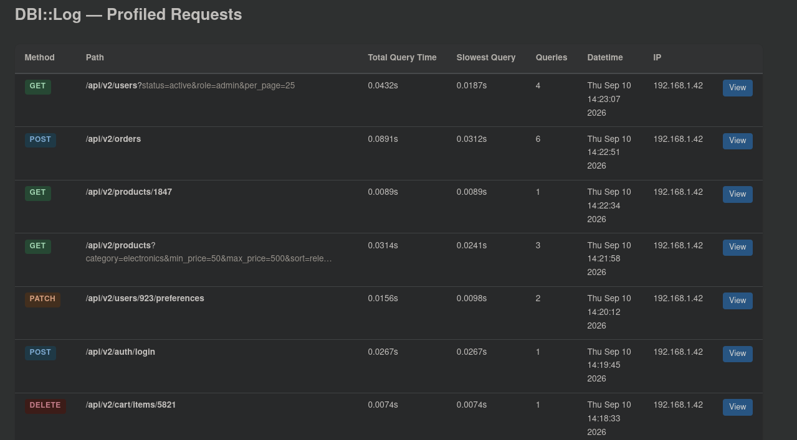
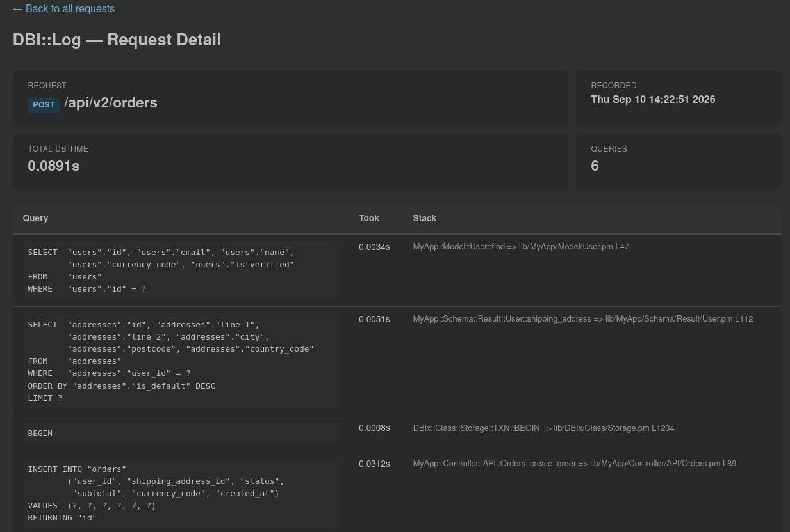

See exactly what DB queries your Catalyst app executes on each HTTP request — how many, how long they took, and where in your code they came from.
When debugging performance issues in a Catalyst application, the first question is often "why was this request slow?" — and the answer is often in the database. This plugin gives you a quick, in-browser view of exactly what queries each HTTP request triggered, without leaving your development server.
Every request gets its own log file capturing all queries executed during that request, with timestamps and timing data.
View every query executed, formatted and syntax-highlighted for readability, along with how long each one took.
Each query shows where in your codebase it was triggered — skip past framework internals straight to the relevant file and line number.
Each profile captures the HTTP method, path, IP address, user agent, and a timestamp so you can identify requests at a glance.


Install from CPAN:
cpanm Catalyst::Plugin::Profile::DBI::LogAdd the plugin to your Catalyst app:
# in lib/MyApp.pm
use Catalyst qw(
-Debug
ConfigLoader
Static::Simple
Profile::DBI::Log
);Optionally configure the output directory in your catalyst.conf:
<Plugin::Profile::DBI::Log>
dbilog_out_dir dbilog_output
</Plugin::Profile::DBI::Log>Start your development server, make some requests, then browse to:
http://localhost:3000/dbi/log/indexUnder the hood, the plugin hooks into the Catalyst request lifecycle and uses DBI::Log to capture all database queries. At the start of each request, a new log file is created with metadata about the HTTP request (method, path, IP, user agent, timestamp). As the request is processed, every DBI query is appended to the log with timing data and a stack trace. At the end of the request, the log is finalised — or deleted if no queries were logged.
The plugin also injects a Catalyst::Controller (via CatalystX::InjectComponent) that provides the web UI for browsing profiled requests.
Repository: github.com/bigpresh/Catalyst-Plugin-Profile-DBI::Log
CPAN: metacpan.org/dist/Catalyst-Plugin-Profile-DBI-Log
Related modules: DBI::Log, Catalyst, DBIx::Class, Catalyst::Plugin::DBIC::Profiler